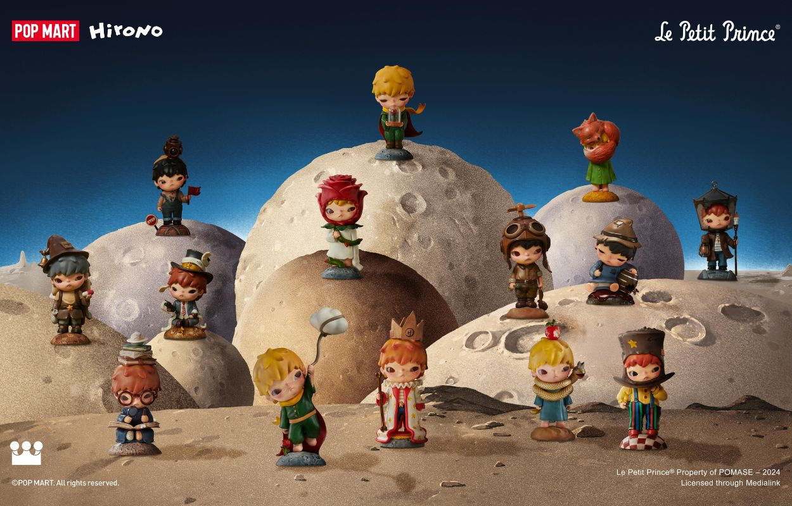
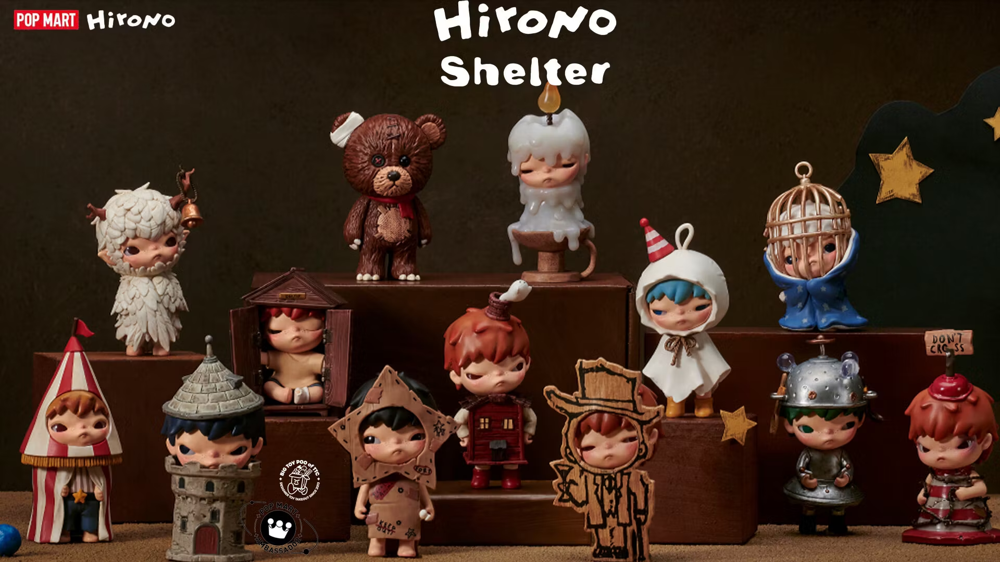
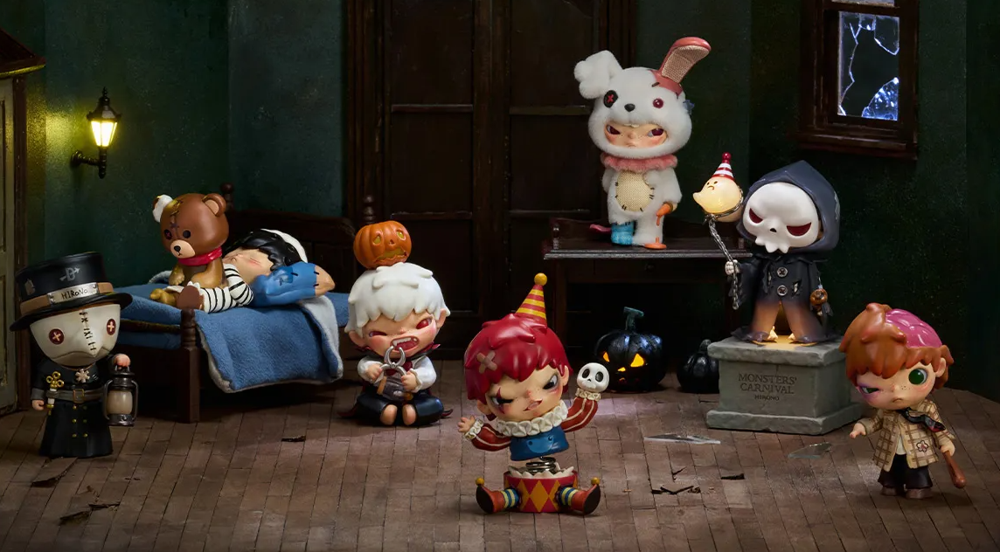

The many series of Hirono

Little prince
A dreamy collaboration inspired by the classic story, featuring Hirono in soft starlit scenes full of childlike wonder.

Shelter
Hirono finds comfort in small, cozy spaces. Each figure feels like a tiny safe haven wrapped in warmth and gentle emotion.

carnival
A playful yet slightly eerie series where Hirono embraces the strange. Spooky fun with a soft heart underneath.